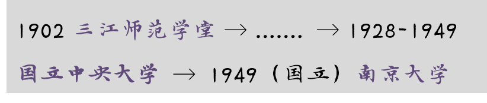

起源：滥觞轩昂，诚朴端容
南京大学（英语：Nanjing University，缩写为NJU），简称“南大”，位于中国南京市，是源远流长的高等学府，上可溯至三国吴永安元年（258年）。据中华民国大陆时期国立中央大学官方沿革史，学校前身追溯至源于258年的南京太学。中央大学改为南京大学后，校史追溯至清末1902年筹办的三江师范学堂。因受政治时局等影响，学校迭经变迁。三江师范学堂成立不久易名两江师范学堂，之后又先后改为南京高等师范学校、东南大学、第四中山大学、江苏大学、中央大学，1949年8月更名国立南京大学，1950年10月径称南京大学。1952年院系调整，南京大学保留文理学院，主要合并金陵大学文理学院，成为文理综合性大学。1978年以来逐步恢复发展为新的综合大学。
-演变历程-

-前身是民国四大名校之一-
民国四大名校：国立中央大学 、国立西南联合大学（由国立北京大学、国立清华大学、私立南开大学联合办学）、国立浙江大学、国立武汉大学